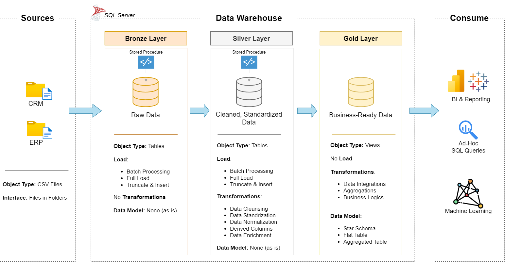
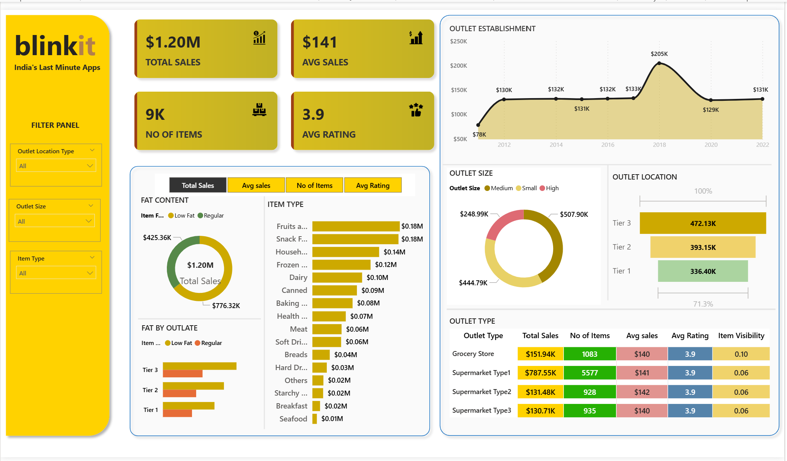
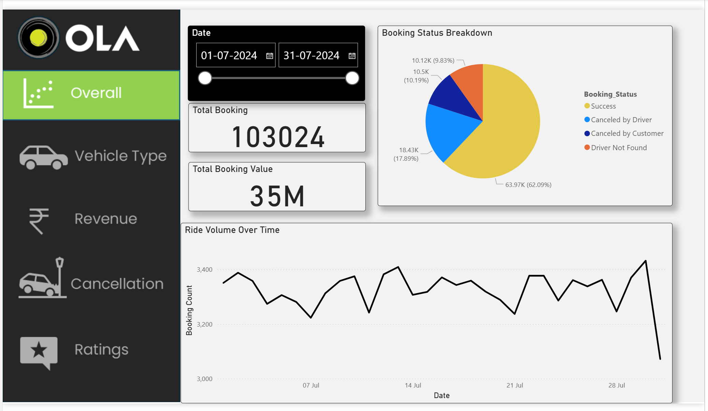
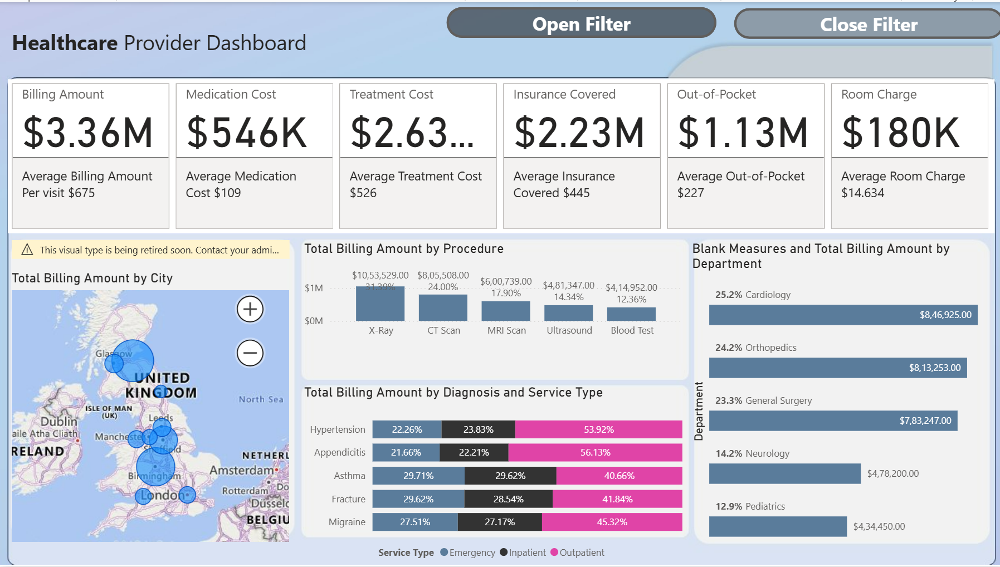
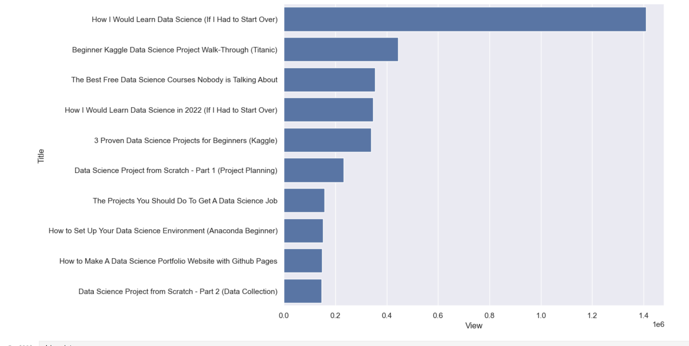
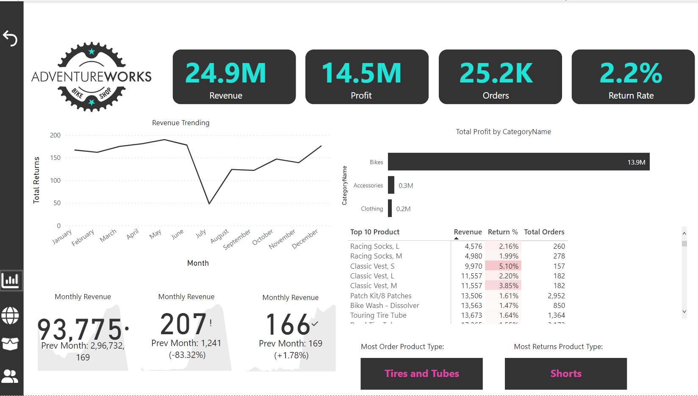
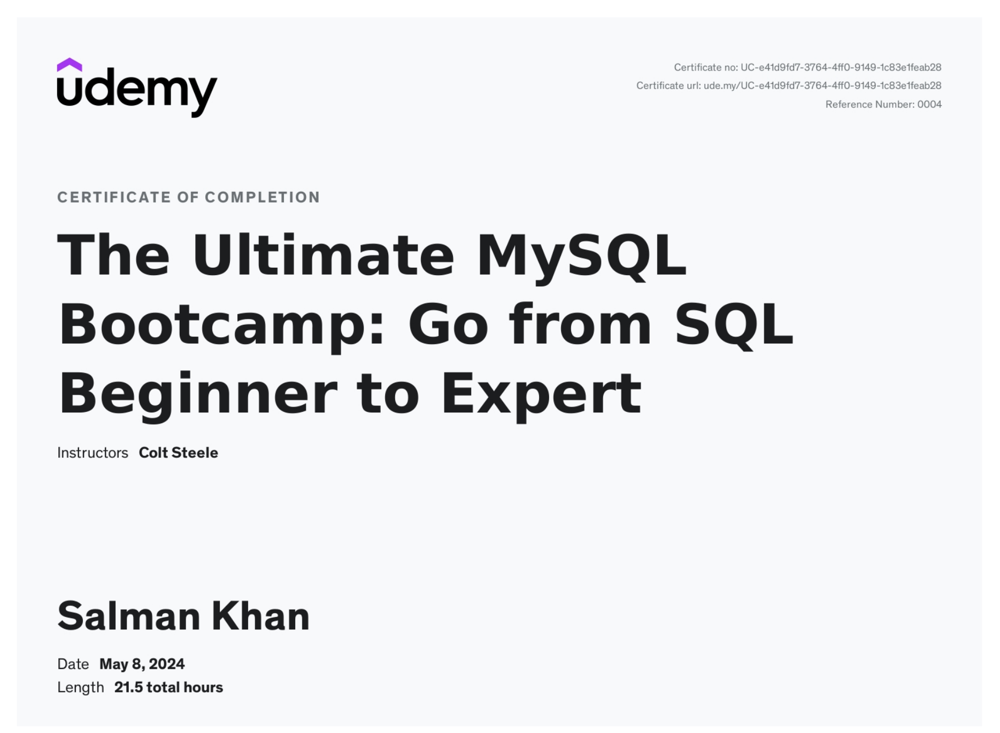
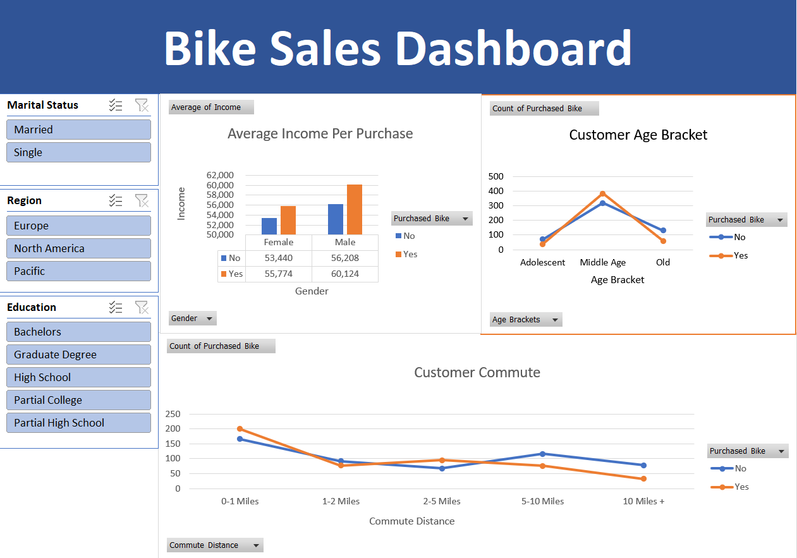

This project aims to explore the Walmart Sales data to understand top performing branches and products, sales trend of of different products, customer behaviour. The aims is to study how sales strategies can be improved and optimized.


This project demonstrates a comprehensive data warehousing and analytics solution, from building a data warehouse to generating actionable insights.

This Power BI dashboard analyzes Blinkit’s sales and operations data to track key KPIs such as total sales, order volume, average delivery time, product category performance, and regional trends, helping drive data-driven business decisions.

Built an interactive Power BI dashboard to analyze Ola ride data, tracking key KPIs such as total rides, revenue, average trip distance, cancellation rates, driver utilization, and city-wise performance. The dashboard enables operational and strategic insights through dynamic filters and drill-down analysis.

Developed an interactive Power BI dashboard to analyze healthcare data, focusing on patient admissions, treatment outcomes, length of stay, departmental performance, and resource utilization. The dashboard helps healthcare stakeholders monitor operational efficiency and improve patient care through data-driven insights.

Built a data analysis pipeline using the YouTube Data API to extract channel and video-level data, perform data cleaning and analysis with Python and Pandas, and visualize insights such as views, likes, engagement rates, and content performance trends.

A collection of SQL scripts for data exploration, analytics, and reporting, showcasing best practices in analyzing relational databases.

Developed a Power BI dashboard using territory lookup logic to map sales data across regions and territories. The project focuses on territory-based performance analysis, regional comparisons, and identifying high- and low-performing sales areas to support strategic planning.

Certifications.

In this project, I walked through the data cleaning process and dashboard creation in Excel.
In this project, Performed Data Cleaning and manipulation. also, performed Exploratory Data Analysis(EDA) using Pandas, Matplotlib and Seaborn libraries.